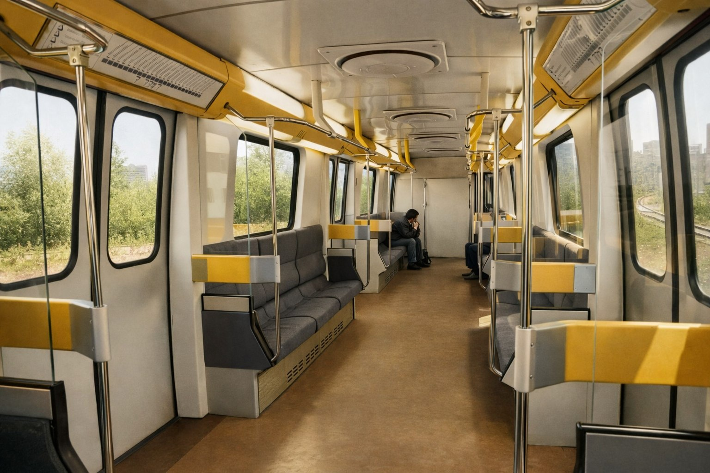

Опытная Яуза — начало истории
Многие знают Яузу, но немногие знают, с чего это всё начиналось. После неудач с типом "И", приступили к разработке Яузы (в начале сделали 81-717 как временный поезд). Завершить разработку не успели — СССР распался, и было не до этого. Позже разработка продолжилась, и уже в 1992 году был готов первый опытный состав.
Первый опытный состав
001-002-003-004-005
Дата презентации
18 января 1993 года
Презентация состава нового поколения Президенту России Б.Н. Ельцину на 3 пути станции "Полежаевская"
Период испытаний
1992 — январь 1993 года
История создания
Начало разработки
После неудач с типом "И" приступили к разработке нового поезда — "Яуза". В начале сделали 81-717 как временный поезд.
Распад СССР
Завершить разработку не успели — СССР распался, и финансирование было заморожено.
Готов первый состав
Разработка продолжилась, и в 1992 году был готов первый опытный состав.
Испытания
До января 1993 года длились испытания нового состава.
Презентация президенту
Презентация состава нового поколения Президенту России Б.Н. Ельцину на 3 пути станции "Полежаевская".
Судьба вагонов
001 и 005
Головные вагоны
Отправлены на территорию завода МетровагонМаш (ныне Трансмашхолдинг)
Утилизированы в 2010
003 и 004
Промежуточные вагоны
Перенумерованы в 0003 и 0004, эксплуатировались до 2019 года
Утилизированы в 2024
002
Промежуточный вагон
Единственный сохранившийся вагон от опытного состава
В ТЧ-4 "Красная Пресня"
Фотогалерея

📸 Станислав Панов/ТАСС

📸 Станислав Панов/ТАСС
Нажмите на фото для увеличения
Технические характеристики
| Параметр | Значение |
|---|---|
| Год создания | 1992 |
| Завод-изготовитель | Мытищинский машиностроительный завод (ММЗ) |
| Модель | 81-720/721 "Яуза" (опытная) |
| Составность | 001-002-003-004-005 |
| Количество вагонов | 5 |
| Период испытаний | 1992 — январь 1993 |
| Дата презентации | 18 января 1993 |
| Утилизированы | 001,005 — 2010; 003,004 — 2024 |
| Сохранился | 002 (в ТЧ-4) |
"Яуза стала символом перехода от советского метровагоностроения к российскому. Первый опытный состав, показанный Ельцину в 1993 году, открыл новую страницу в истории Московского метро. Жаль, что от него остался всего один вагон."